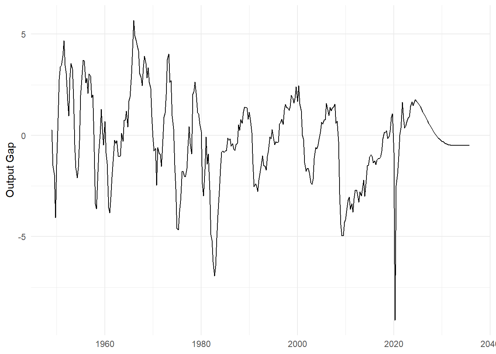
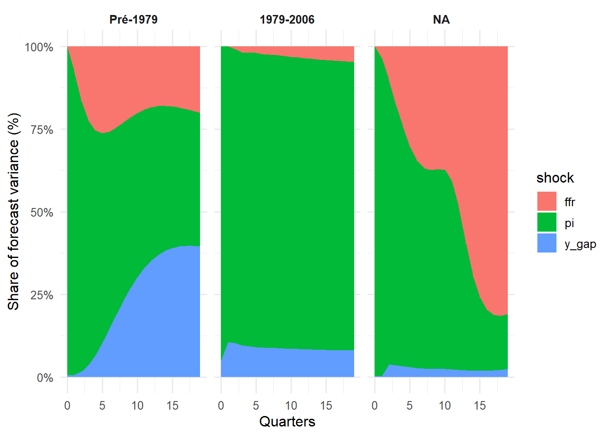
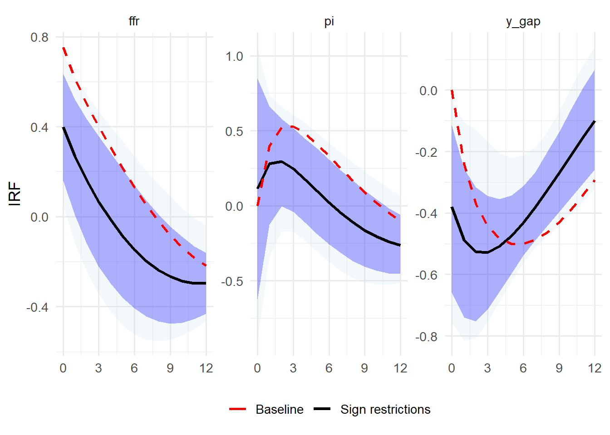
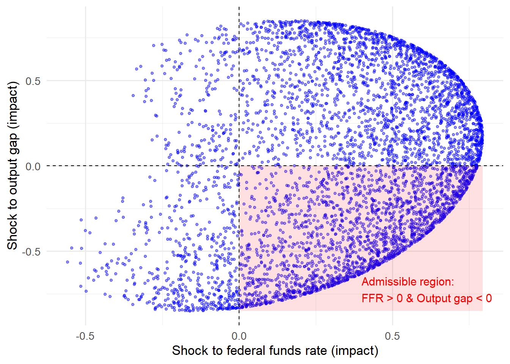
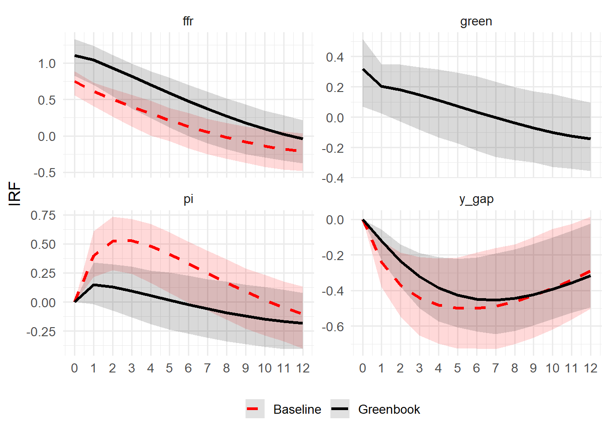
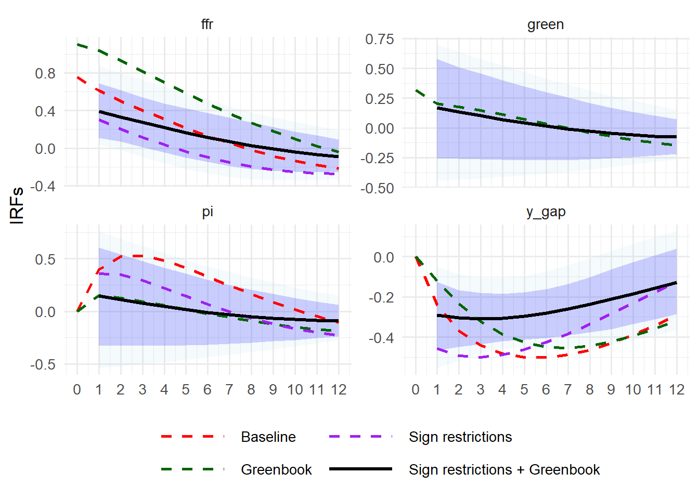

packages <- c(
"tidyverse",
"lubridate",
"zoo",
"fredr",
"openxlsx",
"mFilter",
"R.matlab",
"strucchange",
"vars"
)
to_install <- packages[!packages %in% installed.packages()[, "Package"]]
if(length(to_install) > 0) install.packages(to_install)
for(p in packages) library(p, character.only = TRUE)
source("utils.R")PP_project
#| setup #| include: true #| echo: false
Solving the price puzzle
This project aims at studying the price puzzle, a macroeconomic paradox observed by Sims (1980), when an increase of interest rate is sometimes followed by an increase of inflation in macroeconometric models.
It is designed as follows :
- Presentation of the data
- Reminder of the results of the NK framework
- Modeling of the MP in US according to Castelnuovo and Surico (2010)
- Solving the price puzzle according different strategies
- Extensions
Output gap (https://www.cbo.gov/data/budget-economic-data)

GDP Deflator and Inflation (FREDR)
fredr::fredr_set_key("2081d90b146ea654a4866e909178bfaf")
gdpdef <- fredr::fredr(
series_id = "GDPDEF",
observation_start = as.Date("1960-01-01")
) %>%
transmute(
date = as.yearqtr(date),
p_gdp = log(value)
) %>%
arrange(date)
pi_gdp <- gdpdef %>%
mutate(
pi = 400 * (p_gdp - lag(p_gdp)) # inflation trimestrielle annualisée
) %>%
drop_na() %>%
dplyr::select(date, pi)
ggplot(pi_gdp, aes(date, pi)) +
geom_line() +
theme_minimal() +
labs(x = NULL, y = "Quarterly inflation (annualized)")
ggsave("sorties/inflation.png", width = 7, height = 4, dpi = 300)ffr_m <- fredr::fredr(
series_id = "FEDFUNDS",
observation_start = as.Date("1960-01-01")
) %>%
transmute(
date_m = as.yearmon(date),
ffr = value
)
ffr_q <- ffr_m %>%
mutate(
date = as.yearqtr(date_m)
) %>%
group_by(date) %>%
summarise(
ffr = mean(ffr, na.rm = TRUE)
) %>%
ungroup() %>%
arrange(date)
# %>%
# filter(date <= "2006 Q4")
ggplot(ffr_q, aes(date, ffr)) +
geom_line() +
theme_minimal() +
labs(x = NULL, y = "Federal Funds Rate")
ggsave("sorties/ffr.png", width = 7, height = 4, dpi = 300)We do a Chow test to highlight the change of regime post 1979.
df_us <- ogap %>%
inner_join(pi_gdp, by = "date") %>%
inner_join(ffr_q, by = "date") %>%
arrange(date)
print(head(df_us, 10)) date y_gap pi ffr
1 1960 Q2 -0.8836612 1.0098727 3.696667
2 1960 Q3 -1.3881528 1.3683171 2.936667
3 1960 Q4 -3.5783399 1.1838135 2.296667
4 1961 Q1 -3.8258301 0.8727463 2.003333
5 1961 Q2 -3.0387802 0.9220135 1.733333
6 1961 Q3 -2.0514700 1.0219730 1.683333
7 1961 Q4 -1.0342937 1.2483689 2.400000
8 1962 Q1 -0.2418696 2.0551249 2.456667
9 1962 Q2 -0.3813454 0.6574374 2.606667
10 1962 Q3 -0.2496653 0.8328867 2.846667We run a Chow test to find the best break point, following Paul Volcker’s appointment at the Fed.
df <- df_us %>%
filter(date <= as.yearqtr("2008 Q4")) %>%
dplyr::select(-date)
lags <- VARselect(df)$selection["SC(n)"]
var_fit <- VAR(df, p = lags, type = "const")
ffr_eq <- var_fit$varresult$ffr
df_model <- ffr_eq$model
y <- df_model[[1]]
X <- model.matrix(ffr_eq)
dates_est <- (df_us %>% filter(date <= as.yearqtr("2008 Q4"))) %>%
pull(date)
dates_est <- dates_est[(lags + 1):length(dates_est)]
dates_est_chr <- as.character(dates_est)
quarters <- seq(as.yearqtr("1974 Q1"), as.yearqtr("1981 Q4"), by = 0.25)
p_values <- numeric(length(quarters))
for (i in seq_along(quarters)) {
bp <- which(dates_est == quarters[i])
if (length(bp) == 1 && bp > 1 && bp < length(y)) {
chow <- sctest(y ~ X - 1, type = "Chow", point = bp)
p_values[i] <- chow$p.value
} else {
p_values[i] <- NA
}
}
p_df <- data.frame(
Quarter = quarters,
P_value = p_values
)
ggplot(p_df, aes(x = Quarter, y = P_value)) +
geom_line(color = "red", linewidth = 1.2) +
geom_hline(yintercept = 0.05, linetype = "dashed", color = "blue") +
theme_minimal(base_size = 14) +
labs(
title = "Chow test p-values",
x = NULL,
y = "p-value"
)
ggsave("sorties/chow1.png", width = 7, height = 4, dpi = 300)df_us_sub <- df_us %>%
filter(date >= as.yearqtr("1979 Q4"))
df <- df_us_sub %>%
dplyr::select(-date)
select_order <- VARselect(df)
lags <- select_order$selection["SC(n)"]
var_fit <- VAR(df, p = lags, type = "const")
ffr_eq <- var_fit$varresult$ffr
df_model <- ffr_eq$model
y <- df_model[[1]]
X <- model.matrix(ffr_eq)
dates_full <- df_us_sub$date
dates_est <- dates_full[(lags + 1):length(dates_full)]
quarters <- seq(as.yearqtr("2006 Q1"), as.yearqtr("2012 Q1"), by = 0.25)
p_values <- numeric(length(quarters))
for (i in seq_along(quarters)) {
bp <- which(dates_est == quarters[i])
if (length(bp) == 1 && bp > 1 && bp < length(y)) {
chow <- sctest(y ~ X - 1, type = "Chow", point = bp)
p_values[i] <- chow$p.value
} else {
p_values[i] <- NA
}
}
p_df <- data.frame(
Quarter = quarters,
P_value = p_values
)
ggplot(p_df, aes(x = Quarter, y = P_value)) +
geom_line(color = "red", linewidth = 1.2) +
geom_hline(yintercept = 0.05, linetype = "dashed", color = "blue") +
theme_minimal(base_size = 14) +
labs(
title = "Chow test p-values (FFR equation)",
x = NULL,
y = "p-value"
)
ggsave("sorties/chow2.png", width = 7, height = 4, dpi = 300)Here we introduce the NK model and its properties.
The parameters are taken from Clarida, R., Galí, J., & Gertler, M. (2000).
Let’s observe the IRFs.
mat_data <- R.matlab::readMat("sorties/irfs.mat")
oo_matrix <- mat_data$oo.
irfs_list <- oo_matrix[[20]]
x_eb <- as.numeric(irfs_list[[6]])
pi_eb <- as.numeric(irfs_list[[7]])
int_eb <- as.numeric(irfs_list[[8]])
nk_df <- data.frame(
horizon = 0:(length(x_eb)-1),
y_gap = x_eb,
pi = pi_eb,
ffr = int_eb,
check.names = FALSE
) %>%
pivot_longer(cols = -horizon, names_to = "variable", values_to = "irf")
ggplot(nk_df, aes(x = horizon, y = irf)) +
theme_minimal(base_size = 14) +
geom_line(size = 1, color = "red") +
facet_wrap(~variable, ncol = 1, scales = "free_y") +
labs(title = NULL,
x = NULL,
y = "IRFs") +
geom_hline(yintercept = 0, color = "grey", linetype = "solid") +
geom_vline(xintercept = 0, color = "grey", linetype = "solid") +
theme(
legend.position = "none",
strip.text = element_text(face = "bold", size = 12),
panel.grid.major = element_line(color = "gray90")
)
ggsave("sorties/nk.png", width = 7, height = 4, dpi = 300)Let’s construct a SVAR model based on [og(t) pi(t) ffr(t)]
# echo: false
Y_pre_ts <- df_us %>%
filter(date <= as.yearqtr("1979 Q3")) %>%
df_to_ts()
Y_post_ts <- df_us %>%
filter(date >= as.yearqtr("1979 Q4"),
date <= as.yearqtr("2006 Q4")) %>%
df_to_ts()
Y_end_ts <- df_us %>%
filter(date >= as.yearqtr("2009 Q2"),
date <= as.yearqtr("2019 Q4")) %>%
df_to_ts()
lags_pre <- VARselect(Y_pre_ts, lag.max = 8, type = "const")
lags_post <- VARselect(Y_post_ts, lag.max = 8, type = "const")
lags_end <- VARselect(Y_end_ts, lag.max = 8, type = "const")
p_pre <- lags_pre$selection["SC(n)"]
p_post <- lags_post$selection["SC(n)"]
p_end <- lags_end$selection["SC(n)"]
cat("Lags retenus (pré) :", p_pre, "\n")Lags retenus (pré) : 1 cat("Lags retenus (post) :", p_post, "\n")Lags retenus (post) : 3 cat("Lags retenus (post) :", p_end, "\n")Lags retenus (post) : 2 var_pre <- VAR(Y_pre_ts, p = p_pre, type = "const")
var_post <- VAR(Y_post_ts, p = p_post, type = "const")
var_end <- VAR(Y_end_ts, p = p_post, type = "const")
irf_pre <- irf(
var_pre,
impulse = "ffr",
response = c("y_gap", "pi", "ffr"),
n.ahead = 12,
boot = TRUE,
runs = 500,
ortho = TRUE # Cholesky
)
irf_post <- irf(
var_post,
impulse = "ffr",
response = c("y_gap", "pi", "ffr"),
n.ahead = 12,
boot = TRUE,
runs = 500,
ortho = TRUE
)
irf_end <- irf(
var_end,
impulse = "ffr",
response = c("y_gap", "pi", "ffr"),
n.ahead = 12,
boot = TRUE,
runs = 500,
ortho = TRUE
)
df_irf_pre <- irf_to_df(irf_pre, impulse_name = "ffr")
df_irf_post <- irf_to_df(irf_post, impulse_name = "ffr")
df_irf_end <- irf_to_df(irf_end, impulse_name = "ffr")
df_irf_pre$period <- factor("Pré-1979", levels = c("Pré-1979", "Post-1979","Post-2007"))
df_irf_post$period <- factor("Post-1979", levels = c("Pré-1979", "Post-1979","Post-2007"))
df_irf_end$period <- factor("Post-2007", levels = c("Pré-1979", "Post-1979","Post-2007"))
nk_df_long <- nk_df %>%
mutate(lower = irf, upper = irf) %>%
expand_grid(period = c("Pré-1979", "Post-1979","Post-2007"))
df_irf_all <- bind_rows(df_irf_pre, df_irf_post,df_irf_end)
df_irf_all_plot <- df_irf_all %>%
mutate(period_factor = factor(period, levels = c("Pré-1979", "Post-1979","Post-2007")))
nk_df_long_plot <- nk_df_long %>%
mutate(period_factor = factor(period, levels = c("Pré-1979", "Post-1979","Post-2007")))
ggplot() +
geom_ribbon(data = df_irf_all_plot,
aes(x = horizon, ymin = lower, ymax = upper, fill = period_factor),
alpha = 0.15, color = NA, show.legend = FALSE) +
geom_line(data = df_irf_all_plot,
aes(x = horizon, y = irf, color = period_factor),
size = 1, show.legend = FALSE) +
geom_line(data = nk_df_long_plot,
aes(x = horizon, y = irf, linetype = "NK model"),
color = "black", size = 1) +
facet_grid(variable ~ period_factor, scales = "free_y") +
scale_color_manual(values = c("Pré-1979" = "red", "Post-1979" = "blue","Post-2007" = "green")) +
scale_fill_manual(values = c("Pré-1979" = "red", "Post-1979" = "blue", "Post-2007" = "green")) +
scale_linetype_manual(name = "", values = c("NK model" = "dotted")) +
labs(title = NULL, x = NULL, y = NULL) +
theme_minimal(base_size = 12) +
theme(
legend.position = "bottom",
plot.title = element_text(face = "bold", hjust = 0.5,size = 12),
strip.text = element_text(face = "bold")
)
ggsave("sorties/baseline.png", width = 7, height = 4, dpi = 300)We want to illustrate where the price puzzle comes from before 1979 and after 2007. We plot the Forecast Error Variance Decomposition (FEVD) after the ffr shock.
fevd_pre <- fevd(var_pre, n.ahead = 20)
fevd_post <- fevd(var_post, n.ahead = 20)
fevd_end <- fevd(var_end, n.ahead = 20)
fevd_to_df <- function(fevd_obj, var_name, period_label) {
mat <- fevd_obj[[var_name]] # matrice horizons x variables
df <- as.data.frame(mat)
df$horizon <- 0:(nrow(df) - 1)
df %>%
pivot_longer(
cols = -horizon,
names_to = "shock",
values_to = "share"
) %>%
mutate(period = period_label)
}
fevd_pi_all <- bind_rows(
fevd_to_df(fevd_pre, "pi", "Pré-1979"),
fevd_to_df(fevd_post, "pi", "1979-2006"),
fevd_to_df(fevd_end, "pi", "Post-2009")
) %>%
mutate(
period = factor(period, levels = c("Pré-1979", "1979-2006", "Post-2007"))
)
ggplot(fevd_pi_all, aes(x = horizon, y = share, fill = shock)) +
geom_area(position = "stack") +
facet_wrap(~ period, nrow = 1) +
scale_y_continuous(labels = scales::percent_format(accuracy = 1)) +
labs(
title = NULL,
x = "Quarters",
y = "Share of forecast variance (%)"
) +
theme_minimal(base_size = 12) +
theme(
strip.text = element_text(face = "bold"),
plot.title = element_text(face = "bold", hjust = 0.5)
)
ggsave("sorties/fevd.png", width = 7, height = 4, dpi = 300)Finally, let’s see the estimated coefficients of the VAR.
eq_pre_pi <- summary(var_pre)$varresult$pi
coef_pre <- coef(eq_pre_pi)
print(coef_pre) Estimate Std. Error t value Pr(>|t|)
y_gap.l1 -0.04246689 0.06447326 -0.6586744 5.121771e-01
pi.l1 0.47596593 0.10274958 4.6322909 1.540897e-05
ffr.l1 0.52646227 0.11655128 4.5170013 2.362931e-05
const -0.48356329 0.35337621 -1.3684093 1.753809e-01Before 1979, the ffr coefficient is positive and large. Before Volcker, the Fed typically raised interest rates in response to expected increases in inflation (poor monetary policy rules, focus on output and unemployment, weak anti-inflation credibility). The VAR confuses cause and consequence.
No Phillips curve effect : output gap has no effect on inflation.
eq_post_pi <- summary(var_post)$varresult$pi
coef_post <- coef(eq_post_pi)
print(coef_post) Estimate Std. Error t value Pr(>|t|)
y_gap.l1 0.228699870 0.12267780 1.8642320 6.534480e-02
pi.l1 0.689683250 0.09670767 7.1316292 1.860219e-10
ffr.l1 0.007192187 0.08250409 0.0871737 9.307150e-01
y_gap.l2 -0.299386336 0.15897046 -1.8832828 6.268926e-02
pi.l2 0.090202782 0.11729592 0.7690189 4.437700e-01
ffr.l2 -0.146833720 0.09440567 -1.5553485 1.231538e-01
y_gap.l3 0.127716230 0.10915041 1.1700940 2.448598e-01
pi.l3 0.187475696 0.10450617 1.7939198 7.597415e-02
ffr.l3 0.104202428 0.07835586 1.3298613 1.867151e-01
const 0.256021093 0.14187595 1.8045418 7.428193e-02Here no short effect, only a medium negative and significant + functioning Phillips curve.
After 1979, the Fed aggressively fought inflation (Volcker disinflation),
eq_end_pi <- summary(var_end)$varresult$pi
coef_end <- coef(eq_end_pi)
print(coef_end) Estimate Std. Error t value Pr(>|t|)
y_gap.l1 0.056214829 0.3901858 0.14407195 0.8864071
pi.l1 0.054105468 0.1797752 0.30096185 0.7655197
ffr.l1 1.719056198 1.7655667 0.97365692 0.3380128
y_gap.l2 -0.487860622 0.4954988 -0.98458494 0.3327025
pi.l2 -0.006660191 0.1769348 -0.03764206 0.9702224
ffr.l2 -0.714818344 3.5398366 -0.20193541 0.8413303
y_gap.l3 0.192155711 0.3805626 0.50492539 0.6173005
pi.l3 0.039960762 0.1632295 0.24481335 0.8082678
ffr.l3 -0.745912385 2.3936639 -0.31161951 0.7574851
const 0.768113339 0.5668315 1.35510007 0.1855022breakdown of the standard VAR structure. Coefficients on interest rates are huge and unstable. It is typical of the ZLB / QE environment.
Apparent but spurious price puzzle.
Trying the fix the puzzle
Following Castelnuovo et al., we propose a sign restrictions approach. We impose that after a monetary shock, ffr > O and outputggap < 0. Inflations remains unconstrained.
chol_pre3 <- irf_pre$irf$ffr
vars_pre3 <- colnames(chol_pre3)
irf_pre3_df <- bind_rows(
lapply(1:3, function(j)
tibble(variable = vars_pre3[j], h = 1:12, irf = chol_pre3[1:12, j])
)
)
irf_pre3_df$model <- "Baseline"
Ymat <- var_pre$y
N <- ncol(Ymat)
var_names <- colnames(Ymat)
p <- var_pre$p
Sigma <- cov(resid(var_pre))
P <- t(chol(Sigma))
H <- 12; n.sim <- 5000
A_raw <- vars::Bcoef(var_pre)
A <- if(is.list(A_raw)) do.call(cbind, A_raw) else A_raw
A_big <- matrix(0, N*p, N*p)
A_big[1:N, 1:(N*p)] <- A[,1:(N*p)]
if(p > 1) A_big[(N+1):(N*p), 1:(N*(p-1))] <- diag(N*(p-1))
manual_irf <- function(B,H){
irf_mat <- matrix(0,H,N)
A_power <- diag(1,N*p)
for(h in 1:H){
A_power <- A_big %*% A_power
irf_mat[h,] <- (A_power[1:N,1:N] %*% B)[,1]
}
colnames(irf_mat) <- var_names
irf_mat
}
irfs_kept <- list(); count <- 0; set.seed(123)
for(i in 1:n.sim){
Z <- matrix(rnorm(N*N), N, N)
Q <- qr.Q(qr(Z))
B <- P %*% Q
colnames(B) <- var_names
irf_B <- manual_irf(B,H)
if(irf_B[1,"ffr"] >= 0 && irf_B[1,"y_gap"] <= 0){
count <- count + 1
irfs_kept[[count]] <- irf_B
}
}
irf_df <- purrr::map_dfr(
irfs_kept,
~as.data.frame(.x) %>% mutate(h = 1:H),
.id = "sim"
) %>%
pivot_longer(cols = -c(sim,h), names_to="variable", values_to="irf")
irf_summary <- irf_df %>%
group_by(h,variable) %>%
summarise(
mean = mean(irf),
lower68 = quantile(irf,0.16),
upper68 = quantile(irf,0.84),
lower90 = quantile(irf,0.05),
upper90 = quantile(irf,0.95),
.groups="drop"
)
ggplot() +
geom_ribbon(data=irf_summary,
aes(x=h,ymin=lower90,ymax=upper90),
fill="lightblue",alpha=.15) +
geom_ribbon(data=irf_summary,
aes(x=h,ymin=lower68,ymax=upper68),
fill="blue",alpha=.3) +
geom_line(data=irf_summary,
aes(x=h,y=mean,color="Sign restrictions",linetype="Sign restrictions"),
size=1.1) +
geom_line(data=irf_pre3_df,
aes(x=h,y=irf,color="Baseline",linetype="Baseline"),
size=1) +
facet_wrap(~variable, scales="free_y") +
scale_color_manual(values=c("Baseline"="red","Sign restrictions"="black")) +
scale_linetype_manual(values=c("Baseline"="dashed","Sign restrictions"="solid")) +
labs(x=NULL, y="IRF") +
theme_minimal(base_size=13) +
theme(legend.position="bottom",
legend.title = element_blank()) +
scale_x_continuous(breaks = unique(irf_summary$h)) +
guides(linetype = "none")
ggsave("sorties/sr.png", width = 7, height = 4, dpi = 300)In VARs, supply and demand shocks are mixed. Before 1979, many shocks are supply shocks : both inflation and ffr increase, and output gap decreases. Because response of inflation to output gap is positive, removing these positive responses reduce the level of inflation. But it doesn’t remove the price puzzle.
We propose now to augment the VAR. As suggested by Casteluovo, we get the inflation forecasts from the Greenbook.
green <- read.xlsx("data/greenbook.xlsx")
df <- df_us %>%
mutate(date = gsub(" ", "", date)) %>%
inner_join(green, by = "date")
df_inf <- df %>%
dplyr::select(date, pi, green) %>%
mutate(
pi = as.numeric(pi),
green = as.numeric(green),
date = as.yearqtr(date, format = "%YQ%q")
)
ggplot(df_inf, aes(x = date)) +
theme_minimal() +
geom_line(aes(y = pi, color = "pi"), linewidth = 1) +
geom_line(aes(y = green, color = "exp"), linewidth = 1) +
scale_color_manual(values = c("pi" = "blue", "exp" = "darkgreen")) +
labs(
x = "Date",
y = "Value",
color = "Variable",
title = "Inflation vs Expectations (Greenbook)"
) +
theme(axis.text.x = element_text(angle = 45, hjust = 1))
df_ts <- df_to_ts(df)
lags_exp <- VARselect(df_ts, lag.max = 8, type = "const")$selection["SC(n)"]
VAR_exp <- VAR(df_ts, p = lags_exp, type = "const")
irf_exp <- irf(
VAR_exp,
impulse = "ffr",
response = c("green", "y_gap", "pi", "ffr"),
n.ahead = 12,
boot = TRUE,
runs = 500,
ortho = TRUE
)
irf_exp_df <- irf_to_df(irf_exp, impulse_name = "ffr") %>%
mutate(model = "Greenbook")
irf_pre_df <- irf_to_df(irf_pre, impulse_name = "ffr") %>%
mutate(model = "Baseline")
green_missing <- irf_pre_df %>%
filter(variable == "pi") %>%
mutate(
variable = "green",
irf = NA, lower = NA, upper = NA
)
irf_pre_df <- bind_rows(irf_pre_df, green_missing)
irf_green <- bind_rows(irf_exp_df, irf_pre_df) %>%
mutate(model = factor(model, levels = c("Baseline", "Greenbook")))
ggplot(irf_green, aes(x = horizon, y = irf, color = model, linetype = model)) +
geom_ribbon(aes(ymin = lower, ymax = upper, fill = model),
alpha = 0.15, color = NA) +
geom_line(size = 1.1) +
facet_wrap(~variable, scales = "free_y") +
scale_color_manual(values = c("Baseline" = "red",
"Greenbook" = "black")) +
scale_fill_manual(values = c("Baseline" = "red",
"Greenbook" = "black")) +
scale_linetype_manual(values = c("Baseline" = "dashed",
"Greenbook" = "solid")) +
labs(
x = NULL,
y = "IRF",
title = NULL,
color = NULL,
linetype = NULL
) +
theme_minimal(base_size = 13) +
theme(legend.position = "bottom") +
guides(fill = "none") +
scale_x_continuous(breaks = unique(irf_green$horizon))
ggsave("sorties/greenbook.png", width = 7, height = 4, dpi = 300)sr3_df <- irf_summary %>%
dplyr::select(variable, horizon = h, irf = mean) %>%
mutate(model = "Sign restrictions")
baseline_full <- irf_pre_df %>%
bind_rows(tibble(variable="green", horizon=1:12,
irf=NA, lower=NA, upper=NA, model="Baseline"))
greenbook_df <- irf_exp_df %>%
dplyr::select(variable, horizon, irf, model)
Y4 <- VAR_exp$y
N4 <- ncol(Y4); names4 <- colnames(Y4)
p <- VAR_exp$p
Sigma4 <- cov(resid(VAR_exp)); P4 <- t(chol(Sigma4))
A4_raw <- vars::Bcoef(VAR_exp)
A4 <- if(is.list(A4_raw)) do.call(cbind,A4_raw) else A4_raw
A4_big <- matrix(0, N4*p, N4*p)
A4_big[1:N4,1:(N4*p)] <- A4[,1:(N4*p)]
if(p>1) A4_big[(N4+1):(N4*p),1:(N4*(p-1))] <- diag(N4*(p-1))
manual_irf4 <- function(B,H){
irf <- matrix(0,H,N4)
A_power <- diag(1,N4*p)
for(h in 1:H){
A_power <- A4_big %*% A_power
irf[h,] <- (A_power[1:N4,1:N4] %*% B)[,1]
}
colnames(irf) <- names4
irf
}
H <- 12; n.sim <- 5000; set.seed(123)
irfs4 <- list(); k4 <- 0
for(i in 1:n.sim){
Z <- matrix(rnorm(N4*N4),N4,N4); Q <- qr.Q(qr(Z))
B <- P4 %*% Q; colnames(B) <- names4
x <- manual_irf4(B,H)
if(x[1,"ffr"]>=0 && x[1,"y_gap"]<=0){
k4 <- k4+1
irfs4[[k4]] <- x
}
}
sr4_df <- purrr::map_dfr(irfs4,
~as.data.frame(.x) %>% mutate(h=1:H),
.id="sim") %>%
pivot_longer(cols=-c(sim,h), names_to="variable", values_to="irf") %>%
group_by(h,variable) %>%
summarise(mean=mean(irf),
lower68=quantile(irf,.16),
upper68=quantile(irf,.84),
lower90=quantile(irf,.05),
upper90=quantile(irf,.95),
.groups="drop") %>%
mutate(horizon=h, model="Sign restrictions + Greenbook")
irf_all <- bind_rows(
baseline_full %>% dplyr::select(variable,horizon,irf,model),
greenbook_df,
sr3_df,
sr4_df %>% dplyr::select(variable,horizon,irf=mean,model)
)
ggplot() +
geom_ribbon(data = sr4_df,
aes(x = horizon, ymin = lower90, ymax = upper90),
fill = "lightblue", alpha = .12) +
geom_ribbon(data = sr4_df,
aes(x = horizon, ymin = lower68, ymax = upper68),
fill = "blue", alpha = .18) +
geom_line(data = sr4_df,
aes(x = horizon, y = mean,
color = "Sign restrictions + Greenbook",
linetype = "Sign restrictions + Greenbook"),
size = 1.2) +
geom_line(data = irf_all,
aes(x = horizon, y = irf, color = model, linetype = model),
size = 1) +
facet_wrap(~variable, scales = "free_y") +
scale_color_manual(values = c(
"Baseline" = "red",
"Greenbook" = "darkgreen",
"Sign restrictions" = "purple",
"Sign restrictions + Greenbook" = "black"
)) +
scale_linetype_manual(values = c(
"Baseline" = "dashed",
"Greenbook" = "dashed",
"Sign restrictions" = "dashed",
"Sign restrictions + Greenbook" = "solid"
)) +
labs(x = NULL,
y = "IRFs",
color = NULL,
linetype = NULL) +
theme_minimal(base_size = 13) +
theme(
legend.position = "bottom",
legend.key.width = unit(2, "cm")
) +
guides(color = guide_legend(nrow = 2), linetype = guide_legend(nrow = 2)) +
scale_x_continuous(breaks = unique(irf_pre_df$horizon))
ggsave("sorties/final.png", width = 7, height = 4, dpi = 300)